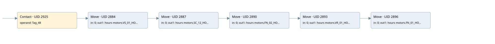

time work motor
time work motor · 검색 색인 순서 49 · 원본 내부 NID 추정 52
백업 PLF 원본의 2903362 바이트 위치에서 복원한 XML. 검색 문서 1050의 객체 키 161022005c12000000000000와 연결했다. 이름 해석 11/11개. 남은 RefId는 상수 또는 미해석 참조다.
연결 구조 다시 그리기
원본 Part/PCon/Wire를 이용한 연결도다. TIA 화면의 래더 배치 또는 실행 결과를 재현한 그림은 아니다. 핀 연결은 아래 표와 원본 XML을 기준으로 읽는다. 노드 위에 마우스를 두면 피연산자 이름을 볼 수 있다.

접점·코일·블록과 피연산자
| Part UID | Gate | Negated 핀 | 연결 피연산자 |
|---|---|---|---|
| 2925 | Contact | operand = Tag_48 | |
| 2884 | Move | in = 0; out1 = hours motors.VS_01_HOUR | |
| 2887 | Move | in = 0; out1 = hours motors.SC_12_HOUR | |
| 2890 | Move | in = 0; out1 = hours motors.FN_02_HOUR | |
| 2893 | Move | in = 0; out1 = hours motors.VR_01_HOUR | |
| 2896 | Move | in = 0; out1 = hours motors.FN_01_HOUR |
접점 경로를 펼친 조건식
Contact·O/A·비교기의 원본 연결을 읽기 쉽게 펼친 보조 해석이다. POWER는 전원 레일 시작을 뜻한다. 호출 블록·에지·타이머의 내부 동작과 다중 쓰기 순서는 이 표로 실행 검증하지 않았다. 미해석 핀과 RefId는 원문 연결표에서 확인한다.
| UID | 동작 | 대상 | 원본 접점 경로 | 내용 |
|---|---|---|---|---|
| 2884 | Move | hours motors.VS_01_HOUR | Tag_48 | Move 입력 0 |
| 2887 | Move | hours motors.SC_12_HOUR | Move UID 2884.eno (블록 동작 확인) | Move 입력 0 |
| 2890 | Move | hours motors.FN_02_HOUR | Move UID 2887.eno (블록 동작 확인) | Move 입력 0 |
| 2893 | Move | hours motors.VR_01_HOUR | Move UID 2890.eno (블록 동작 확인) | Move 입력 0 |
| 2896 | Move | hours motors.FN_01_HOUR | Move UID 2893.eno (블록 동작 확인) | Move 입력 0 |
원본 배선 연결
| Wire UID | 동일 Wire 연결 끝점 |
|---|---|
| 2927 | Powerrail {} ↔ Part 2925.in |
| 2910 | ORef 2899 (Tag_48) ↔ Part 2925.operand |
| 2926 | Part 2925.out ↔ Part 2884.en |
| 2911 | ORef 2900 (0) ↔ Part 2884.in |
| 2913 | Part 2884.eno ↔ Part 2887.en |
| 2912 | Part 2884.out1 ↔ ORef 2901 (hours motors.VS_01_HOUR) |
| 2914 | ORef 2902 (0) ↔ Part 2887.in |
| 2916 | Part 2887.eno ↔ Part 2890.en |
| 2915 | Part 2887.out1 ↔ ORef 2903 (hours motors.SC_12_HOUR) |
| 2917 | ORef 2904 (0) ↔ Part 2890.in |
| 2919 | Part 2890.eno ↔ Part 2893.en |
| 2918 | Part 2890.out1 ↔ ORef 2905 (hours motors.FN_02_HOUR) |
| 2920 | ORef 2906 (0) ↔ Part 2893.in |
| 2922 | Part 2893.eno ↔ Part 2896.en |
| 2921 | Part 2893.out1 ↔ ORef 2907 (hours motors.VR_01_HOUR) |
| 2923 | ORef 2908 (0) ↔ Part 2896.in |
| 2924 | Part 2896.out1 ↔ ORef 2909 (hours motors.FN_01_HOUR) |
식별자 해석 근거 11개
| ORef UID | RefId | 이름 | IdentXmlPart 파일 | 해석 방법 |
|---|---|---|---|---|
| 2899 | 284 | Tag_48 | 0613-IdentXmlPart.xml | UID/RID + search-text + NID agreement |
| 2900 | 12 | 0 | 0616-IdentXmlPart.xml | literal candidate: UID/RID/NID + nearby named declarations + search-text agreement |
| 2901 | 162 | hours motors.VS_01_HOUR | 0615-IdentXmlPart.xml | UID/RID + search-text + NID agreement |
| 2902 | 12 | 0 | 0616-IdentXmlPart.xml | literal candidate: UID/RID/NID + nearby named declarations + search-text agreement |
| 2903 | 168 | hours motors.SC_12_HOUR | 0615-IdentXmlPart.xml | UID/RID + search-text + NID agreement |
| 2904 | 12 | 0 | 0616-IdentXmlPart.xml | literal candidate: UID/RID/NID + nearby named declarations + search-text agreement |
| 2905 | 174 | hours motors.FN_02_HOUR | 0615-IdentXmlPart.xml | UID/RID + search-text + NID agreement |
| 2906 | 12 | 0 | 0616-IdentXmlPart.xml | literal candidate: UID/RID/NID + nearby named declarations + search-text agreement |
| 2907 | 180 | hours motors.VR_01_HOUR | 0615-IdentXmlPart.xml | UID/RID + search-text + NID agreement |
| 2908 | 12 | 0 | 0616-IdentXmlPart.xml | literal candidate: UID/RID/NID + nearby named declarations + search-text agreement |
| 2909 | 186 | hours motors.FN_01_HOUR | 0615-IdentXmlPart.xml | UID/RID + search-text + NID agreement |
검색 코드 보조 자료
참조 명칭을 찾기 위한 자료이며 실행 순서나 AND/OR 관계는 위 연결표로 확인한다.
"tag_48" move 0 move 0 move 0 move 0 move 0 "hours motors".vs_01_hour "hours motors".sc_12_hour "hours motors".fn_02_hour "hours motors".vr_01_hour "hours motors".fn_01_hour